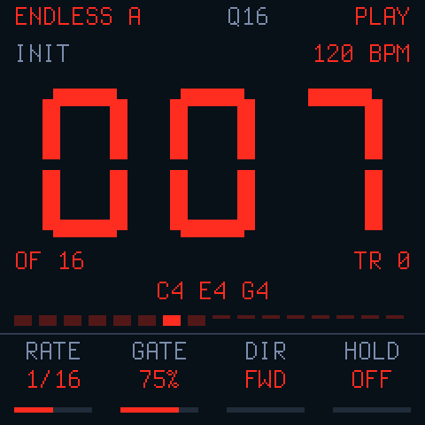
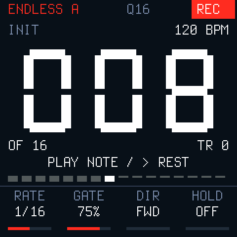

ENDLESS E3
Grave uma frase nota por nota. Toque, transponha e acompanhe o passo no contador grande.


Antes de instalar
Salve seu trabalho e exporte um backup. Atualização experimental com preservação do banco. Inclui retorno à pública 1.0.3 original. Esta página não instala a partir da V016.
Use Chrome ou Edge no computador, cabo USB de dados e alimentação estável. Feche outras abas e aplicativos MIDI. A versão pública continua na 1.0.3.
Instalar ou retornar
Verificando os dois pacotes…
Nenhum dispositivo acessado.
Escolha a operação após consultar o teclado.
Cores e encaixe no tempo
PLAY: números, BPM e valores na cor da parte/pad, incluindo a parte vermelha. REC: contador e valores brancos, selo REC vermelho e nome da parte em sua cor.
Q16: mudanças de tonalidade entram na próxima semicolcheia do clock; WAIT indica uma mudança agendada. Um atraso de até 20 ms (limitado a ¼ da divisão) entra imediatamente, mantendo a fase rítmica. Não é possível corrigir um ataque que já passou.
HOLD ON mantém a frase atual até a troca. HOLD OFF para ao soltar a última tecla e cancela trocas pendentes, mas lembra o clock por um tempo (uma semínima). Uma nova entrada nesse intervalo encaixa na grade; após uma pausa maior, o primeiro ataque é imediato. A 120 BPM, a espera máxima é próxima de 125 ms. PLAY inicia imediatamente; STOP, mudança de pattern e entrada de gravação limpam a espera. A divisão de disparo é fixa em 1/16 neste teste, independente do RATE de cada parte.
Primeira frase
- Selecione um pattern vazio, como P6, uma parte ANALOG e SINGLE.
- Toque SEQ até ENDLESS, depois de TRANSPOSE. Com o transporte parado, toque REC para iniciar a entrada.
- Toque notas ou acordes e solte todas as teclas para avançar. A frase pode ter até 256 passos.
- > insere pausa; com notas seguradas, acrescenta duração ligada. < desfaz o último passo. REC encerra a entrada.
- PLAY toca todas as tracks. Cada tecla agenda o reinício de todas do começo na grade Q16 e transpõe ANALOG: C3 é zero. Cada frase conserva seu próprio número de passos. DRUM-X acompanha o tempo, sem transposição.
- K1 RATE · K2 GATE · K3 FWD/REV/RND por parte. K4 HOLD é global: OFF para todas e apaga PLAY ao soltar a última tecla; ON continua. K5 controla TEMPO exclusivamente nesta tela; BPM fica visível no alto.
- Salve pelo banco normal de Patterns. PARA na tela ENDLESS desativa/reativa o modo sem apagar notas. Segurar REC mantém o comando de limpar a track.
O primeiro REC em uma frase já existente acrescenta no final; os exemplos de fábrica não são apagados automaticamente. Entrar em ENDLESS ativa todas as partes ANALOG. A seleção permanece ao alternar partes e voltar de DRUM-X, que mantém seu editor normal. Use SINGLE; SPLIT/LAYER e entrada MIDI dedicada B–D continuam fora deste protótipo.
SUPER, sends e áudio USB permanecem. A UI1 de display está incluída. A gravação de vídeos USB no iPhone ainda pode apresentar os ruídos conhecidos.
Arquivos e fontes
Firmware E3 · Retorno público · SHA-256 · Guia completo e limites · Fontes GPL-3.0
Transferência antiga interrompida? Conclua no mesmo navegador pelo instalador E1 ou pelo instalador E2 correspondente, antes de instalar E3.